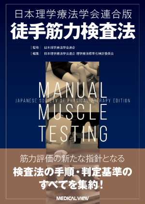
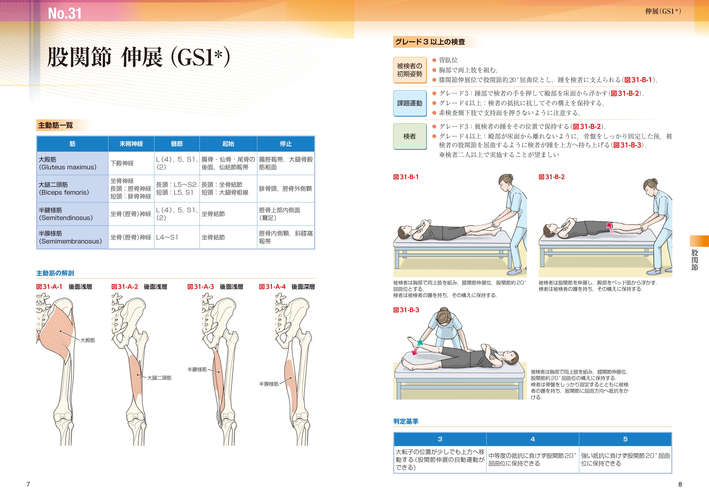
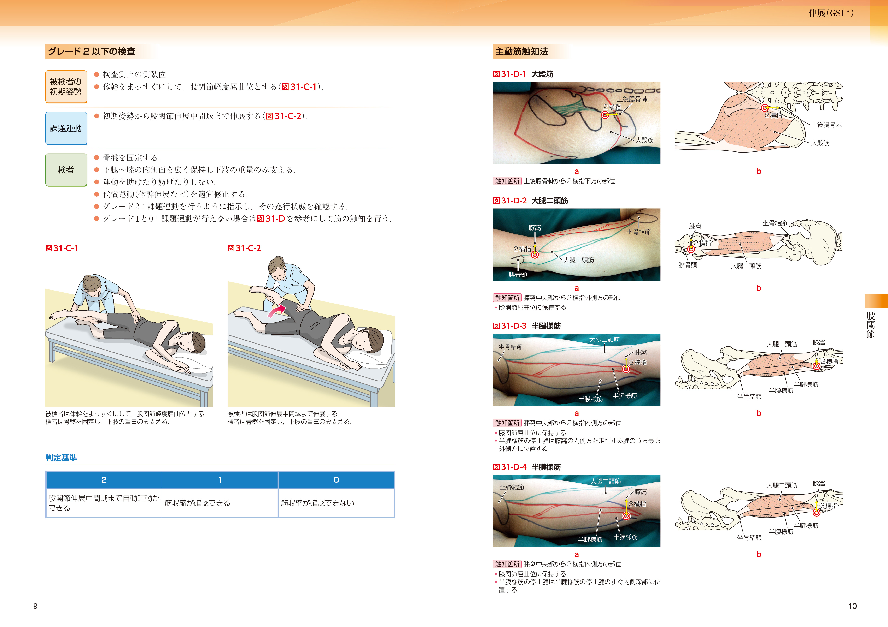

MMTの新スタンダードを学べる１冊！ついに刊行！！
- 監 修
- 日本理学療法学会連合
- 編 集
- 日本理学療法学会連合 理学療法標準化検討委員会
-
日本理学療法学会連合が策定した
筋力評価の新たな指針となる検査法の
手順・判定基準を解説！ -
各関節運動における主動筋の走行や筋触知法が
ビジュアルにわかる最新テキスト‼

徒手筋力検査法（MMT）は理学療法士を中心としてリハビリテーションの臨床で広く用いられている基本的評価法であり，養成校では必須の内容となっている。
本書は，学会が独自に策定したMMTを豊富なイラスト・写真でわかりやすくまとめた最新テキストである。各項目は主動筋一覧，検査手技，主動筋触知法の順に解説し，読者がイメージしやすく，わかりやすい構成となっている。
定価 3,850円（本体3,500円＋税10％） B5判・216頁・オールカラー
イラスト450点，写真240点 ISBN978-4-7583-2269-0
目次
１章 総論
イントロダクション
２章 検査法
-
頸部
- No.1 頸部屈曲（GS1）
- No.2 頸部伸展（GS1）
- No.3 頸部回旋（GS2）
-
体幹
- No.4 体幹屈曲（GS1＊）
- No.5 体幹伸展（GS1＊）
- No.6 体幹回旋（GS2）
-
肩甲帯
- No.7 肩甲帯挙上（GS1）
- No.8 肩甲帯引き下げ（下制）（GS2）
- No.9 肩甲帯屈曲（GS1）
- No.10 肩甲帯伸展（GS2）
-
肩関節
- No.11 肩関節屈曲（前方挙上）（GS1）
- No.12 肩関節肩甲骨面挙上（GS1＊）
- No.13 肩関節伸展（GS1）
- No.14 肩関節外転（GS1）
- No.15 肩関節外旋（GS1）
-
- No.16 肩関節内旋（GS1）
- No.17 肩関節水平外転（GS1）
- No.18 肩関節水平内転（GS1）
-
肘関節
- No.19 肘関節屈曲（GS1）
- No.20 肘関節伸展（GS1）
-
前腕
- No.21 前腕回外（GS2）
- No.22 前腕回内（GS2）
-
手関節
- No.23 手関節掌屈（GS1）
- No.24 手関節背屈（GS1）
-
手指
- No.25 手指屈曲（GS2）
- No.26 手指伸展（GS2）
- No.27 手指外転（GS2）
- No.28 手指内転（GS2）
-
母指・小指
- No.29 母指・小指対立（GS2）
-
股関節
- No.30 股関節屈曲（GS1）
- No.31 股関節伸展（GS1＊）
- No.32 股関節外転（GS1）
- No.33 股関節内転（GS1）
- No.34 股関節外旋（GS1）
- No.35 股関節内旋（GS1）
-
膝関節
- No.36 膝関節屈曲（GS2）
- No.37 膝関節伸展（GS1）
-
足関節・足部
- No.38 足関節・足部底屈（GS1＊）
- No.39 足関節・足部背屈（GS1）
- No.40 足関節・足部回内（GS1＊）
- No.41 足関節・足部回外（GS1＊）
-
足趾（指）
- No.42 足趾（指）屈曲（GS2）
- No.43 足趾（指）伸展（GS2）
各検査は主動筋一覧，検査手技，主動筋触知法という流れで解説！
重力に抗して運動できる場合に有効な
徒手筋力計を用いた筋力測定の推奨例も一部の検査で提示。

検査の測定手技はイラストで表現。各グレードにおいて，どのような手順で検査・判定を進めるのかわかりやすい。
主動筋の触知部位は写真とイラストを並べてレイアウト。体表からの解剖が初学者にも理解しやすい！

各項目の冒頭に主動筋一覧の表とイラストを掲載。関節運動に関連する筋をイメージしやすい構成。
発刊に寄せて
藤澤 宏幸 先生
日本理学療法学会連合 理事長
理学療法評価の標準化に向けた日本理学療法学会連合の取り組みの成果である新しいMMTは，実際に臨床で使用している理学療法士の経験知と身体運動学的エビデンスを融合させたものであり，検査しやすく判断も明確にできるものとなっています。
中山 恭秀 先生
日本基礎理学療法学会理事（理学療法標準化検討委員会担当）
日本は理学療法士が活躍する世界有数の国の1つであり，筋力を測ることは理学療法士の専門性の1つです。本書がMMTの新しい基準として，広く利用されることを願っています。
小林 武 先生
東北文化学園大学医療福祉学部教授
本書は筋力の段階づけが明確であること，筋収縮を触知するための方法がイラストと写真でわかりやすく示されていることなどが特徴であり，初めてMMTを学ぶ人にとっても，また再学習したい人にとっても最適の一冊です。
磯貝 香 先生
常葉大学保健医療学部理学療法学科教授
治療と評価が同時進行する理学療法において，対象者の姿勢を大きく変化させることなく，簡便に実施できる徒手筋力検査法は欠かせません。本書は，理学療法士の声を反映させた，臨床で使いやすい検査法を提供します。
大森圭貢 先生
湘南医療大学保健医療学部リハビリテーション学科理学療法学専攻教授
本書には，今後ますます使用が見込まれるハンドヘルドダイナモメーターを用いた測定方法が収載されています。より精度の高い筋力測定の手引きとして，臨床，研究，そして教育の場で広く活用していただけることを心から望んでおります。
斉藤秀之 先生
日本理学療法士協会 会長
MMTはリハビリテーション医療の枠を超えて，保健・医療・福祉の幅広い現場で活用されるべき評価法です。各分野で活躍される理学療法士の方々が集結し，体系化された学会連合版MMTについて，本書では理論と実践の両面から深く理解できます。